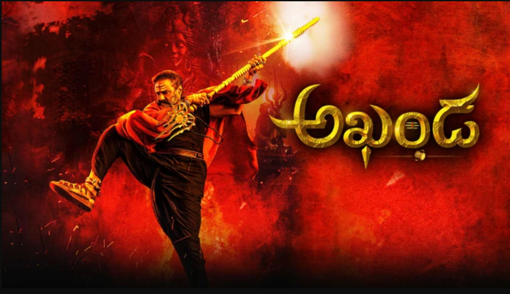

My self Vamsi Krishna Adapa from Vijayawada, India.Completed my Under Graduation in Computer Science Stream from Veltech University,Chennai. After completing of my Under Graduation i started working in NTT DATA SERVICES for an year,after that i joined in the Northwest West Missouri State University to purse my masters in Applied Computer Science Stream. I wish to become Software Developer after completion of my Masters.
For most of the people in Telugu states Balakrishna is an Emotion,his excellent acting and powerful dialogue delivery in the movie was awsome, I got goosebumps watching that agora character throughout. And the Bgm and Music was rock solid and finally Jai Balayya.
